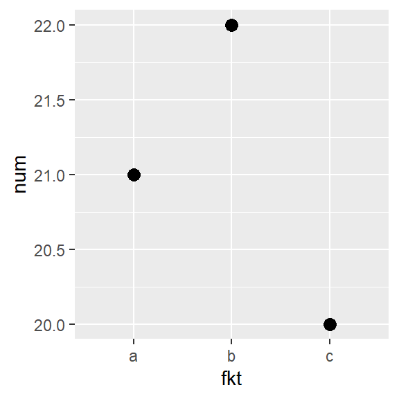
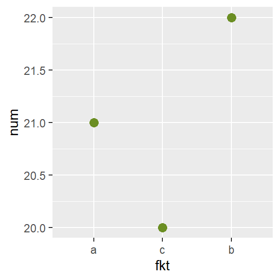
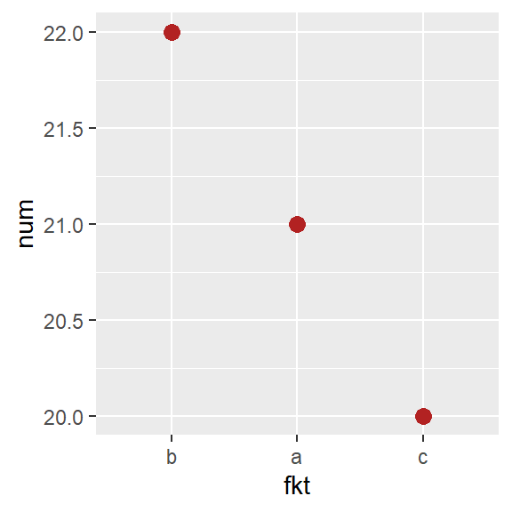

Weitere Tipps
Hier sind weitere, nützliche Tipps, die ich gerne sehr viel früher gewusst hätte.
dplyr pipes %>%
Manchmal möchte man mehrere Befehle nacheinander auf ein R-Objekt anwenden. Das werden dann entweder mehrere Befehle, die man nacheinander in mehreren Zeilen ausführt oder ein sehr großer, geschachtelter Befehl. Unser Beispieldatensatz ist derselbe wie im Kapitel zur deskriptiven Statistik:
head(mtcars) # Erste Zeilen## mpg hp am cyl
## Mazda RX4 21.0 110 manu 6
## Mazda RX4 Wag 21.0 110 manu 6
## Datsun 710 22.8 93 manu 4
## Hornet 4 Drive 21.4 110 auto 6
## Hornet Sportabout 18.7 175 auto 8
## Valiant 18.1 105 auto 6str(mtcars) # Struktur des Datensatzes## 'data.frame': 32 obs. of 4 variables:
## $ mpg: num 21 21 22.8 21.4 18.7 18.1..
## $ hp : num 110 110 93 110 175 105 24..
## $ am : Factor w/ 2 levels "auto","ma"..
## $ cyl: Factor w/ 3 levels "4","6","8"..Sagen wir, wir wollen nur die Autos, die einen Verbrauch von weniger als 20 mpg haben und 6 oder 8 Zylinder. Außerdem benötigen wir dann lediglich die Spalte mit der hp und wollen diese sortiert nach Größe anzeigen. Dies könnte man z.B. so umsetzen:
mtcars2 <- subset(mtcars, mpg < 20)
mtcars3 <- subset(mtcars2, cyl != "4")
mtcars4 <- mtcars3$hp
sort(mtcars4)## [1] 105 123 123 150 150 175 175 175 180 180 180 205 215 230 245 245 264 335Man könnte es auch in einen einzigen Befehl schachteln:
sort(subset(subset(mtcars, mpg < 20), cyl != "4")$hp)## [1] 105 123 123 150 150 175 175 175 180 180 180 205 215 230 245 245 264 335Der erste Ansatz hat den Vorteil, dass man mehr Kontrolle über die einzelnen Schritte hat - also z.B. einen Zwischenschritt schnell entfernen kann. Der zweite Ansatz nimmt weniger Platz ein.
Die dplyr pipes aus dem dplyr package versuchen das Beste aus beiden Ansätzen zu kombinieren. Anstatt mehrere Funktionen ineinander schachteln zu müssen, kann man sie mit den %>% Operatoren aneinanderknüpfen. Eine detaillierte Einleitung dazu gibt es z.B. hier. Man würde es also wie folgt umsetzen:
library(dplyr)
mtcars %>%
subset(mpg < 20) %>%
subset(cyl != "4") %>%
pull(hp) %>%
sort## [1] 105 123 123 150 150 175 175 175 180 180 180 205 215 230 245 245 264 335Der Befehle
pull()extrahiert eine Spalte aus einem Datensatz direkt in das Format eines Vektors. Will man eine oder mehrere Spalten extrahieren aber weiterhin im Spaltenformat lassen, kann man stattdessen denselect()Befehl nutzen.
dplyr vs. data.table
Manch einem mag aufgefallen sein, dass die packages dplyr und data.table in Sachen Datenhandling überlappen, also unterschiedliche Funktionen zum selben Prozess zur Verfügung stellen. Tatsächlich nutze ich of beide Pakete gleichzeitig. Es ist ein wenig Geschmackssache und abhängig von der jeweiligen Aufgabe, welcher Code am besten zum Ziel führt. Eine recht ausführliche Gegenüberstellung der beiden packages gibt es hier.
%in% Funktion
Die %in% Funktion kann verschieden Arten nützlich sein. Wenn wir z.B. eine neue Spalte erstellen wollen, die lediglich “TRUE” anzeigt wenn ein Auto 4 oder 6 Zyliner hat, aber “FALSE” wenn es 8 hat, ginge das so:
# ohne %in%
somecars$cyl == "4" | somecars$cyl == "6"## [1] FALSE TRUE TRUE FALSE# mit %in%
somecars$cyl %in% c("4", "6")## [1] FALSE TRUE TRUE FALSEEs ist also klar, dass die %in% mit mehreren Stufen sehr schnell sehr platzsparend wird. Übrigens gibt es m.E. keine %not_in% Funktion, aber man kann sie sich z.B. so selber bauen:
`%not_in%` <- Negate(`%in%`)# ohne %not_in%
somecars$cyl != "4" & somecars$cyl != "6"## [1] TRUE FALSE FALSE TRUE# mit %not_in%
somecars$cyl %not_in% c("4", "6")## [1] TRUE FALSE FALSE TRUEPivot-artige Häufigkeitsliste
Die table() Funktion im Kapitel zur deskriptiven Statistik ist zwar nützlich, aber oft brauche ich sie in einem long-format, also mit einer einzigen Spalte aller Anzahlen. Ich hätte die Anzahlen also gerne ähnlich aufbereitet wie man es in Excel mit Pivot-Tabellen kann. Dafür nutze ich folgende Kombination aus dplyr und data.table Befehlen:
# mit einer Spalte
mtcars %>%
select(cyl) %>%
table(exclude=NULL) %>%
data.table %>%
setorder(-N) %>% show## . N
## 1: 8 14
## 2: 4 11
## 3: 6 7# mit zwei Spalten
mtcars %>%
select(cyl, am) %>%
table(exclude=NULL) %>%
data.table %>%
setorder(-N) %>% show## cyl am N
## 1: 8 auto 12
## 2: 4 manu 8
## 3: 6 auto 4
## 4: 4 auto 3
## 5: 6 manu 3
## 6: 8 manu 2Faktorstufen ordnen
Spätestens beim Erstellen von Plots mit ggplot() stößt man auf das Problem, dass die Faktorstufen einer Variable, die as.factor definiert ist, anscheinend einer festen Reihenfolge unterliegen, die sich nicht ganz so schnell ändern lässt - zumindest nicht durch z.B. sortieren des Datensatzes.
Man beachte bei diesem Beispiel, dass die Reihenfolge (a, b, c) im Datensatz selbst stimmt und sogar genau so in den as.factor() Befehl eingegeben wurde. Dennoch ordnet R die Stufen automatisch alphabetisch, was man sowohl im plot, als auch mit dem levels() Befehl sehen kann:
dat <- data.frame(fkt = as.factor(c("a", "c", "b")),
num = c(21, 20, 22))dat## fkt num
## 1 a 21
## 2 c 20
## 3 b 22levels(dat$fkt)## [1] "a" "b" "c"ggplot(data=dat, aes(y=num, x=fkt)) +
geom_point(size=3)
Tatsächlich ist die Reihenfolge der Faktorstufen mit im Objekt abgespeichert und meist standardmäßig alphabetisch angeordnet. Es gibt mehrere Möglichkeiten um diese Reihenfolge zu ändern. Ich selbst nutze seit einiger Zeit das forcats package.
Manuell anordnen
Will man eine manuelle Reihenfolge bestimmen, so geht das mit dem Befehl fct_relevel:
library(forcats)
dat <- dat %>%
mutate(fkt=fct_relevel(fkt, c("a","c","b")))
levels(dat$fkt)## [1] "a" "c" "b"ggplot(data=dat, aes(y=num, x=fkt)) +
geom_point(size=3, color="olivedrab")
Nach einer anderen Variable ordnen lassen
Will man die Faktorstufen lieber nach z.B. der y-Variable (num) des Plots ordnen, so geht das mit fct_reorder:
library(forcats)
dat <- dat %>%
mutate(fkt=fct_reorder(fkt, num, .desc=TRUE))
levels(dat$fkt)## [1] "b" "a" "c"ggplot(data=dat, aes(y=num, x=fkt)) +
geom_point(size=3, color="firebrick")
pacman package
Will man oft viele packages laden und/oder einige davon sogar erst noch installieren, weil man z.B. auf verschiedenen PCs arbeitet, dann bietet sich die p_load Funktion des pacman package an. Es lädt und installiert, wenn nötig eine vorgegebene Liste an packages:
# Ohne pacman package:
library(data.table)
library(dplyr)
library(forcats)
library(ggplot2)
library(ggfortify)
library(lme4)
library(lmerTest)# Mit pacman package:
library(pacman)
p_load(data.table, dplyr, forcats, ggplot2, ggfortify, lme4, lmerTest)Bei Fragen kannst du mir gerne schreiben!
schmidtpaul@hotmail.de